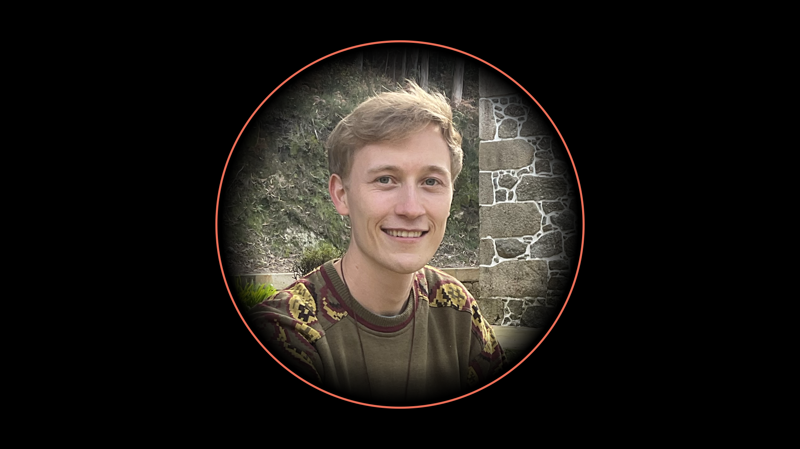
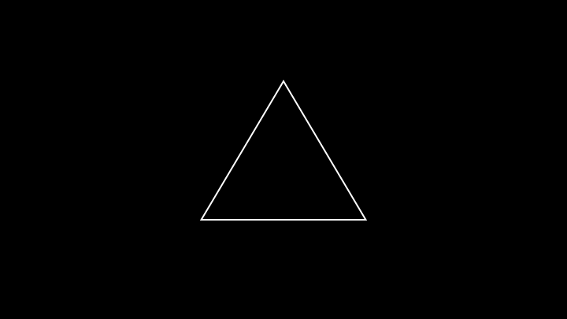

David Rug
Visual Storyteller, Futurist, Science Communicator, Metacrisis Expert


From an early age, I've been driven by an endless curiosity to understand the deep patterns behind the complexity of our world, approaching any situation through first-principle thinking with the goal of making the world a better place.

My journey into technology began at age 11 when I started exploring how 3D games worked, leading me to discover CGI and game engines. This early passion for procedural animation systems and physics simulations, combined with my analytical mindset, naturally led me to study physics at Heidelberg University, one of Germany's leading institutions, in September 2017.
During my studies (2017-2020), I honed my skills in mathematics, physics, and computer science, learning how to think systematically and understand concepts at their most fundamental level.

I completed my bachelor's in the context of an Erasmus exchange at the University of Leiden (2019-2020), where my research project perfectly united my key interests. Working in a quantum optics lab, I developed a novel approach to quantum state tomography by combining quantum optics with deep learning, building neural networks from scratch using PyTorch.
While at university, I discovered independent educators creating animated educational content that proved far more effective than traditional teaching methods. This rekindled my passion for using CGI and 3D animations in education. Inspired by pioneers like 3Blue1Brown, I developed my own Python library for creating powerful 3D visualizations pushing the boundaries of what's possible in educational animation.

Towards the end of my bachelor's in 2020, I became immersed in the work of thought leaders organising around the label of "GameB". A movement exploring design constraints for a sustainable civilization through the intersection of complexity theory, systems thinking, game-theory and cybernetics.

This led me to deeply researching the underlying drivers of the problems our species is facing today, often termed the "meta-crisis", studying what type of system is required to avoid catastrophic scenarios and transition towards a more sustainable and humane planetary civilization.
This research culminated in me founding Project Liminality in 2021, which fundamentally rethinks how we share and organise around knowledge. The project synthesizes indigenous knowledge systems with open-source software frameworks and visual storytelling to create a novel system for civilizational knowledge transfer. My work has since garnered the attention of key players in the systems change space and led to ongoing collaborations with aligned projects.

On the project's YouTube channel, I continue to create educational content about the most important ideas, making highly complex and abstract topics accessible and intuitive through visual storytelling.

More recently, my work has expanded into my Liminal Consulting service (2022-present), where I help key organizations in the regenerative, web3 and systems change space to structure and communicate their unique approaches through visual storytelling. Most notably I had the opportunity to work with the Civilization Research Institute - the leading organization in the meta-crisis mitigation space.

This unique intersection of diverse skills leaves me with the ability to wrap my mind around any type of concept - be it scientific, philosophical or artistic in nature - and communicate that with exceptional clarity to a wider audience through visual metaphors.
I'm particularly interested in contributing this capacity to projects addressing humanity's most pressing challenges.
Contact Me:


 Rua Senhor do Bonfim 341, 4730-190 Goães, VVD, Portugal
Rua Senhor do Bonfim 341, 4730-190 Goães, VVD, Portugal